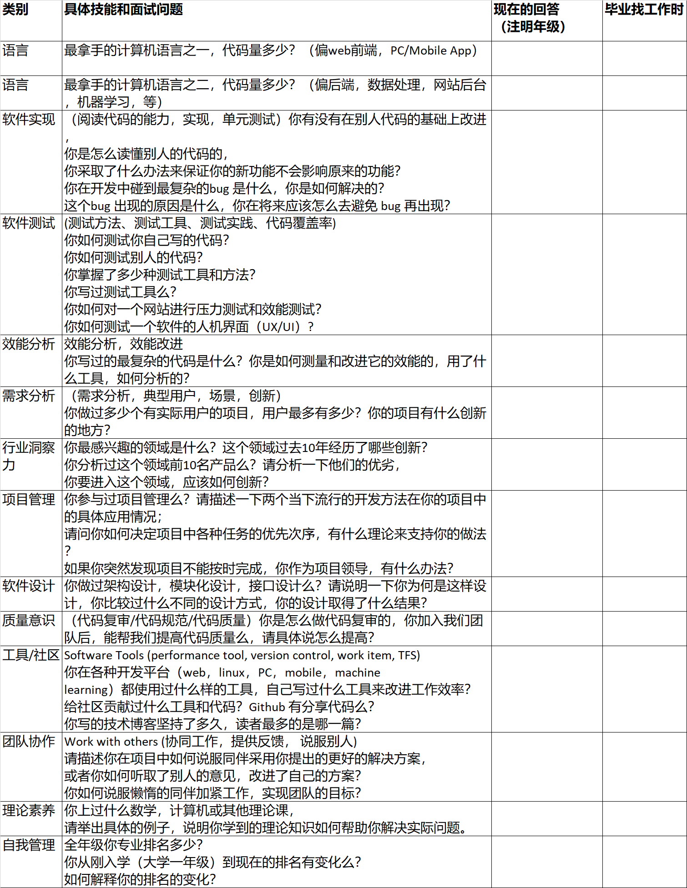

	z<!DOCTYPE html>
<html>
<head>
<meta charset="utf-8">
<meta name="description" content="">
<meta name="HandheldFriendly" content="True">
<meta name="MobileOptimized" content="320">
<meta name="viewport" content="initial-scale=1.0, minimum-scale=1.0, maximum-scale=1.0, user-scalable=no">
<title>Free Documentation HTML Template</title>
<link rel="alternate" type="application/rss+xml" title="" href="feed/index.html">
<link href="http://fonts.googleapis.com/css?family=Raleway:700,300" rel="stylesheet"
        type="text/css">
<link rel="stylesheet" href="css/style.css">
<link rel="stylesheet" href="css/prettify.css">
</head>
<body>
<div class="wrapper">
<nav>
 
  	<div class="pull-left">
    </div>
    
    <div class="pull-right">
    </div>

</nav>
<header>
  <div class="container">
    <h2 class="lone-header">构建之法-软件工程第三章：程序员成长之路</h2>
  </div>
</header>
<section>
  <div class="container">
    <ul class="docs-nav">
      <li><strong>个人能的衡量与发展</strong></li>
      <li><a href="#welcome" class="cc-active">欢迎大家倾听</a></li>
      <li><a href="#benefits" class="cc-active">软件工程.引言</a></li>
      <li><a href="#features" class="cc-active">IC在团队中的流程</a></li>
      <li><a href="#license" class="cc-active">如何衡量</a></li>
      <li class="separator"></li>
      <li><strong>软件工程师的职业与发展</strong></li>
      <li><a href="#view_type" class="cc-active">筑基阶段</a></li>
      <li><a href="#animation_style" class="cc-active">初级阶段</a></li>
      <li><a href="#bars_text" class="cc-active">高级阶段</a></li>
      <li><a href="#vote_counter" class="cc-active">团队协作</a></li>
      <li><strong>思考与总结</strong></li>
      <li><a href="#rating_icons" class="cc-active">程序员的核心竞争力</a></li>
      <li><a href="#rating_titles" class="cc-active">IT行业“好工程师”的检查表</a></li>
      <li><a href="#bar_colors" class="cc-active">现在需要去做的</a></li>

    </ul>
    <div class="docs-content">
      <h2> Getting Started</h2>
      <h3 id="welcome">欢迎大家倾听 </h3>
      <p> 感谢大家能够去听我接下来要讲的内容</p>
      
      <p>我们要讲的是构建之法—现代软件工程一书中第三章内容，这部分内容叫：程序员的成长之路。
         我们通过如何去衡量一个程序员的水平，软件工程师的职业成长之路，软件工程师技术方面的描述
         以及最后的思考与总结这么几部分来讲解这一章的内容,下面是我们完成这次作业的过程</p>
      <ul>
        <li>首先我们考虑了采用什么样的形式去展现我们的课下所作的功课</li>
        <li>我们需要去准备一下素材，一些关于本次见习的素材，我们小组成员开始去读课本，找资料</li>
        <li>然后通过合作，通过负责分工，简单粗糙的完成这个任务，可能有些像完成项目的感觉</li>
        <li>最后我们做了一个思考与总结</li>
      </ul>
      <p>如果讲课过程中有些错误的地方，以及讲的不得体的地方，请大家见谅，也希望大家能够积极的提出，与
      	我们共同来讨论，共同学习，然后共同进步 </p>
      <h3 id="benefits"> 软件工程 引言</h3>
      <ul>
        <li>软件工程包括了开发、运营、维护软件的过程中的很多技术、做法、习惯和思想</li>
        <li>软件工程把这些相关的技术和过程统一到一个体系中，叫“软件开发流程”</li>
        <li>软件开发流程的目的是为了提高软件开发、运营、维护的效率，以及提升用户满意度、软件的可靠性和可维护性
          </li>
        <li>软件开发流程不光指团队的流程，还包括个人开发流程，因为软件团队是由个人组成的。在团队的大流程中，是
        	每一个具体的个人在做开发、测试、用户界面设计、管理、交流等工作。个人在团队中也有独立的流程。</li>
        <li>把每个人的工作有序地组织起来，就是团队的流程</li>
      </ul>
      <h3 id="features">IC在团队中的流程</h3>
      <ul>
        <li>通过交流、实验、快速原型等方法，理解问题、需求或任务</li>        
        <li>提出多种解决办法并估计工作量</li>
        <li>其中包括寻找以前的解决方案，因为很多工作是重复性的</li>
        <li>与相关角色交流解决问题的提案，决定一个可行的方案</li>
        <li>执行，把想法变成实际中能工作的代码，同时验证方案的可行性和其他特性（例如程序的效能等</li>
        <li>和团队的其他角色合作，在测试环境中测试实现方案，修复缺陷（Bug）。如果此方案有严重的问题，那么就考虑其他方案</li>
        <li>在解决方案发布出去之后，对结果负责每个人的工作质量直接影响最终软件的质量。</li>
      </ul>
      <h3 id="license"> 如何衡量</h3>
      <p>软件工程师如何衡量、证明自己的能力</p>
      <p>问：你的职业是软件工程师吗？</p>
      	  <p>答：是。</p>
		  <p>问：你觉得你“职业”到哪一个程度？</p>
		  <p>答：嗯，我在一个能发工资的地方上班，靠我的</p>
		  <p>软件技术挣钱，所以我相当的职业。</p>
		  <p>问：像职业篮球队员那样职业？</p>
		  <p>答：差不多吧。</p>
          <p>问：职业篮球队员都有很详细的记录说明</p>
          <p>我们需要思考将来我们如何去评价自己？？？？</p>
      <hr>
      <h3 id="features">软件工程师的职业发展</h3>
      <p> 21世纪以来，中国大陆每年招收六百万大学生，其中的百分之十是在学习各种IT相关的专业（计算机科学与技术、计算机工程、计算机软件、软件工程、管理信息系统等）。扣除读研究生（最终大部分也会走上工作岗位）、出国等分流，同时考虑到培训机构给就业市场贡献的大量劳动力，每年大致有四十万到六十万左右的“职业软件工程师”进入工作岗位。就软件工程师这个职业而言，有很多证明个人能力的办法和模型，下面简单介绍几种。</p>
      <ul>
        <li>计算机等级考试和全国计算机技术与软件专业技术资格考试</li>
        <li>微软公司有微软认证专家（Microsoft Certi-fied Professional，MCP） </li>
        <li>甲骨文公司有Oracle认证项目（Oracle Certi-fication Program，OCP）</li>
      </ul>
      <p>获得了相应公司和行业的认证，工程师就可以更容易地获得相应的工作、合同机会。一些行业协会也有自己的认证项目，例如IEEE（电气电子协会）就提供了一系列的职业认证服务</p>
      <h3 id="view_type">成长过程</h3>
      <ul>
        <li>筑基阶段</li>
      </ul>
     
      <pre class="prettyprint">
      	<li>在编写代码时要保持良好的习惯，最好添加注释。代码的编写是一个程序员的基本功，不能眼高手低。</li>
      	<li>精通几个常用的代码编辑工具。</li>
      	<li>掌握或自定义一些快捷键，从而提高代码编写速度。</li>
      	<li>随时随地的做笔记</li>
      	<li>学会一些主流的代码管理工具的使用</li>     	
     </pre>
      <ul>
        <li>问题层次</li>
      </ul>
      <pre class="prettyprint"><im<p></p></pre>
      <h3 id="animation_style"> 初级阶段</h3>
      <ul>
        <li>first</li>
      </ul>
      <pre class="prettyprint"><li>熟悉并精通某种编程语言的基础和特性</li>
      	 <li>善于给自己写一些工具，拿来即用的那种</li>
      </pre>
      <ul>
        <li>second</li>
      </ul>
      <pre class="prettyprint">
      	<li>掌握开发的常用技术</li>
      	<li>掌握常用数据库的基本操作</li>
      </pre>
      <ul>
        <li>third</li>
      </ul>
      <pre class="prettyprint">  
      <li>掌握一些主流开源框架，设计思想</li>
      <li>掌握设计模式，学会使用一些开发模式</li>
      <li>学会使用数据库的DDL，DML，以及存储过程</li>
      </pre>
      <ul>
        <li>last</li>
      </ul>
      <pre class="prettyprint">
      	<li>熟悉项目的整个生命周期，从需求到上线中的各个阶段</li>
      	<li>关注技术网站和社区，开拓思路，汲取他人的优序经验，同时分享自己经验</li>
      	<li>熟悉整个项目周期的中的各类文档</li>
      	<li>定期给自己策划一个项目，练手/li>
      </pre>
      <ul>
        <li>职业成长——自我评估</li>
      </ul>
      <pre class="prettyprint">
      	<p></p>
      </pre>
      <h3 id="bars_text">高级阶段</h3>
      <ul>
        <li>Show</li>
      </ul>
      <pre class="prettyprint">
      	<li>关注科技，了解IT界动态，学会发现和创新</li>
      	<li>开始学习项目管理相关知识，学会如何成为一个优秀的项目管理人</li>
      	<li>适时给自己买一些书籍，给自己大脑及时充电</li>
      	<li>经常参加一些培训讲座，开拓视野</li>
      	<li>关注政策，了解时代互联网发展趋势，学习和创新</li>
      </pre>
      <ul>
        <li>一个工程师对这些知识的掌握分为如下四个阶段</li>
      </ul>
      <pre class="prettyprint">
      	<li>入门（Introductory）</li>
      	<li>熟练（Competency）</li>
      	<li>带头人（Leadership）</li>
      	<li>大师（Mastery）</li>
      </pre>
      <h3 id="vote_counter">团队协作</h3>
      <ul>
        <li>Show</li>
      </ul>
      <pre class="prettyprint">
              <li>不可否认，有相当部分牛人确实可以独自扛起大梁，独自完成一项任务。</li>
       	      <li>但是，一个人的精力毕竟有限，很难面面俱到，而且软件开发有许多突发事件和难以预料的情况发生。</li>
       	      <li>对需求的理解稍微偏差就可能导致项目的失败。 因此团队显得很重要，社会分工可以促进生产力的发展，</li>
       	      <li>同样，一个开发团队做好分工就可以很好地完成任务，提高效率。一个好的，高效的团队，它的队员需要具备以下几点品质。</li>
      </pre>
      <ul>
        <li>The Step </li>
      </ul>
      <pre class="prettyprint">
      	<p>一、协作，既然是团队，那就是分工完成任务，每人独自负责一部分，然后达到合作完成的目的。因此这需要</p>
    	<p>二、贡献，既然作为一个团队的一份子，就应该有奉献精神，因为管理者最终要看整个团队的贡献，一个队员即
   使能力很高但是不能为团队做贡献，不能融入团队，也是会被管理者所不容的。</p>
		<p>三、分享，团队的每一个队员应该即使分享自己的知识，促进大家共同进步。</p>
      </pre>
      <h3 id="rating_icons"> 程序员的核心竞争力</h3>
      <ul>
        <li>answer_1</li>
        <p> 1. 整合现有资源的能力，什么时候造轮子，什么时候不造轮子，什么情况下利用公司自己的轮子，什么情况下利用开源的轮子。<br>
        	2. 产品发展方向的规划能力，一个技术类的框架，产品，平台，需要程序员明确什么问题是要解决的，什么问题是不要解决的，产品相对其他竞争产品的优势在哪些方面。<br>
        	3. debug能力，有了线上问题，可以一撸到底，无论问题在哪里，操作系统，文件系统，虚拟机，框架，等等，都可以定位问题所在。<br>
        	4. 文档、pr能力，作出了产品，可以迅速了解优势所在并推广<br>5. 编码习惯，比如严谨的持续集成，测试样例先行，之所以说是习惯不是技巧，是因为好的编码习惯，<br>
        	可以持续为团队带来更大收益，而好的编码技巧没有那么大的效果</p>
        <li>our_answer</li>
         <p>
         	1.初级程序员 会复制粘贴<br>
         	2.中级程序员 修改Bug能力强<br>
         	3.高级程序员 可以自己创造一些东西出来。<br>
         </p>
      </ul>
      <h3 id="rating_titles"> IT行业“好工程师”的检查表</h3>
      <ul>
        <li>Please look the picture</li>
      </ul>
      <pre class="prettyprint"><p></p></pre>
      <ul>
        <li>还需要做的东西</li>
      </ul>
      <pre class="prettyprint"><br>
      	教别人始终是学习一切东西的最好方法之一。<br>
      	相对而言，由于你在开发领域还是个新手，认为自己没什么可教给人家的，这可以理解,但这毫无意义。<br>
      	记住，你所学到的一切都是你从别人或别处学到的；因此请尝试一下，成为另外一个人要请教的"别人"。<br>
      	每天尽量花一点时间试着回答别人的问题，其他网站的亦可。读读其他会员的回答，你也可以学到很多东西。<br>	
      </pre>
      <h3 id="bar_colors"> 现在需要去做的</h3>
      <ul>
        <li>认真听课，按时完成课堂作业</li>
        <li>经常进行小组讨论</li>
                                 通过交流，学习思想，学习方法
        <li>一起合作去完成一些小的项目</li>
                                  从小事情着手，从小项目学习
      </ul>
    </div>
  </div>
</section>
<section class="vibrant centered">
  <div class="">
    <h4> Super901  制作人：马鑫典  刘怡成   赵东浩 </a></h4>
  </div>
</section>
<footer>
  <div class="">
  </div>
</footer>
</div>
<script src="js/jquery.min.js"></script> 
<script type="text/javascript" src="js/prettify/prettify.js"></script> 
<script src="https://cdn.bootcss.com/prettify/r298/run_prettify.js"></script>
<script src="js/layout.js"></script>
</body>
</html>
